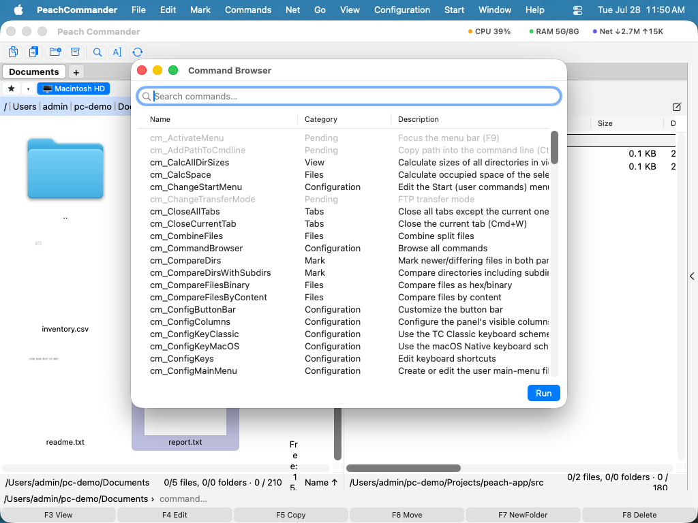

Klawiatura i skróty
Peach Commander jest zbudowany do sterowania z klawiatury. Dostarczany jest z dwoma gotowymi schematami skrótów i pozwala ponownie przypisać dowolne polecenie do preferowanych klawiszy. Jeśli przychodzisz z klasycznego dwupanelowego menedżera plików, możesz zachować klawisze, które już znasz; jeśli wolisz używać znanych kombinacji Mac, przełącz się na schemat macOS jednym kliknięciem. Przeszukiwalna przeglądarka poleceń pozwala odkryć wszystko, co aplikacja potrafi, i uruchomić dowolne polecenie po nazwie.
Przełącz schemat klawiatury
- Otwórz menu Konfiguracja.
- Wybierz Schemat klawiatury, a następnie wybierz jeden: - TC Classic (domyślny) zachowuje tradycyjne klawisze, z kombinacjami opartymi na Ctrl, takimi jak Ctrl+R do odświeżenia panelu. - macOS Native mapuje te same akcje na znane klawisze Mac tam, gdzie ma to sens, na przykład Cmd+C do kopiowania plików i Cmd+F do wyszukiwania.
- Znacznik wyboru pokazuje aktywny schemat. Zmiana wchodzi w życie natychmiast w menu i pasku skrótów.
Dostosuj skróty
- Wybierz Konfiguracja > Skróty klawiaturowe….
- Znajdź polecenie za pomocą pola wyszukiwania, a następnie zaznacz jego wiersz.
- Kliknij Nagraj… i naciśnij żądaną kombinację klawiszy. Zostaje przypisana od razu.
- Jeśli ta kombinacja była już używana przez inne polecenie, powiadomienie informuje, któremu poleceniu została odebrana.
- Użyj Wyczyść, aby usunąć skrót polecenia, lub Przywróć domyślne, aby odrzucić wszystkie zmiany i wrócić do oryginalnych klawiszy schematu.
 (Rysunek: wyszukaj polecenie, a następnie użyj Nagraj, Wyczyść lub Przywróć domyślne, aby zmienić jego skrót.)
(Rysunek: wyszukaj polecenie, a następnie użyj Nagraj, Wyczyść lub Przywróć domyślne, aby zmienić jego skrót.)
Przeglądaj wszystkie polecenia
- Wybierz Konfiguracja > Przeglądarka poleceń….
- Wpisz w polu wyszukiwania, aby filtrować według nazwy, kategorii lub opisu.
- Kliknij dwukrotnie polecenie lub zaznacz je i kliknij Uruchom, aby wykonać je na aktywnym panelu.

(Rysunek: każde polecenie na jednej przeszukiwalnej liście, z krótkim opisem każdego.)Skróty
| Akcja | Ścieżka menu |
|---|---|
| Wybierz schemat klasyczny | Konfiguracja > Schemat klawiatury > TC Classic |
| Wybierz schemat Mac | Konfiguracja > Schemat klawiatury > macOS Native |
| Edytuj skróty | Konfiguracja > Skróty klawiaturowe… |
| Przeglądaj wszystkie polecenia | Konfiguracja > Przeglądarka poleceń… |
| Odśwież aktywny panel | F2 (także Ctrl+R) |
Uwagi
- Twoje niestandardowe skróty są zapisywane automatycznie i nakładane na aktywny schemat. Przełączanie schematów zachowuje Twoje osobiste zastąpienia.
- Polecenia niedostępne w bieżącym kontekście pojawiają się przygaszone zarówno w edytorze skrótów, jak i w przeglądarce poleceń.
- Aby używać klawiszy funkcyjnych (F1–F12) bezpośrednio, włącz Używaj klawiszy F1, F2 itd. jako standardowych klawiszy funkcyjnych w Ustawieniach systemowych > Klawiatura. W przeciwnym razie przytrzymaj klawisz Fn wraz z klawiszem funkcyjnym.